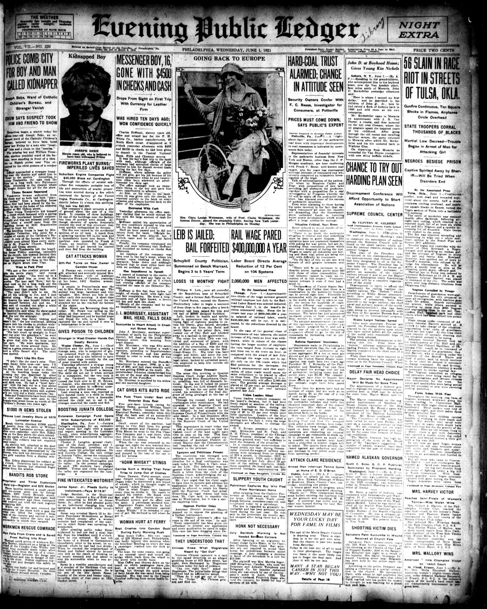
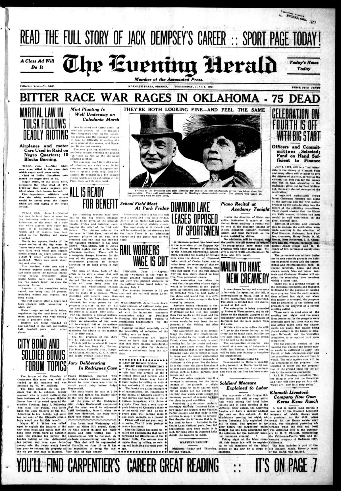
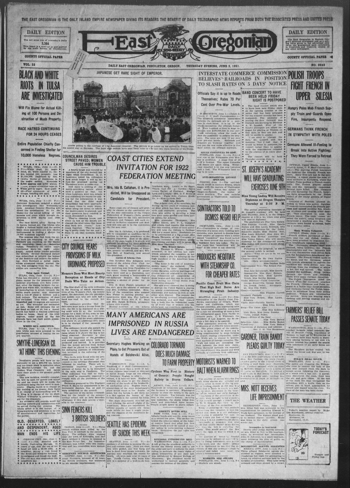
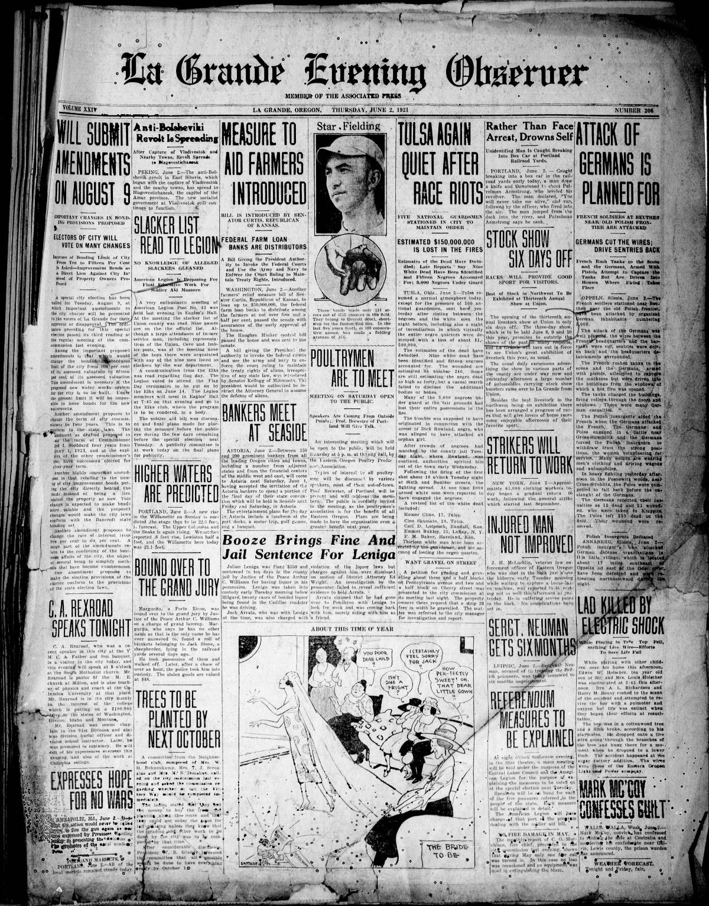
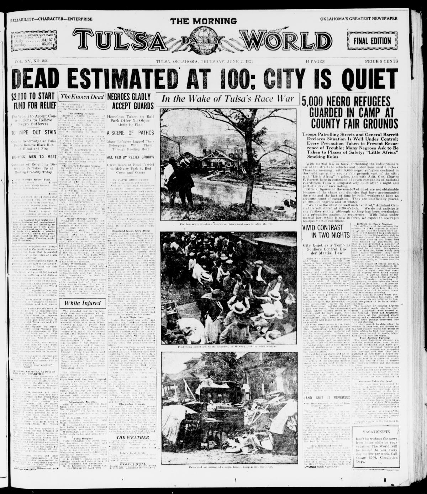
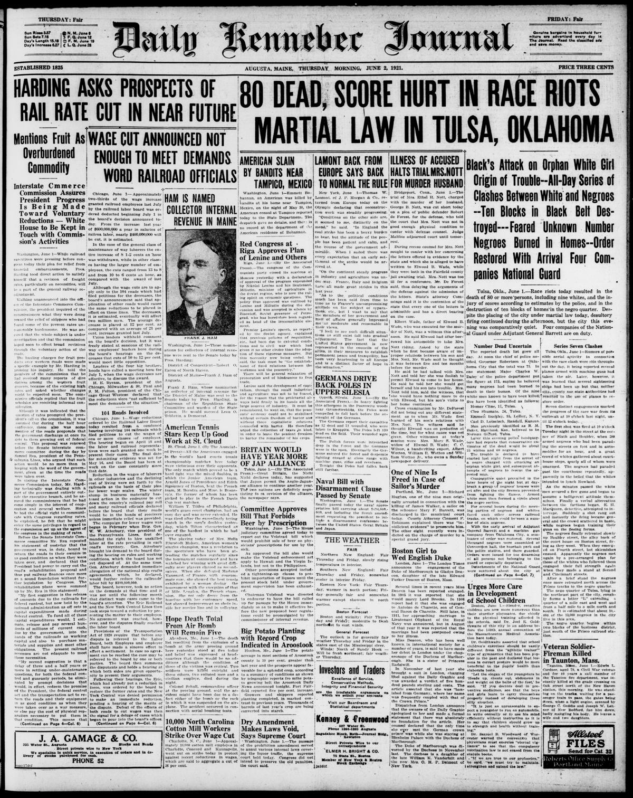
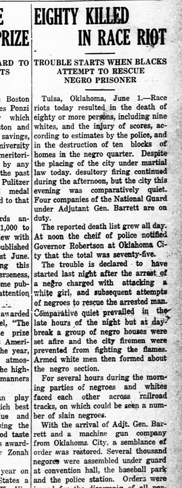
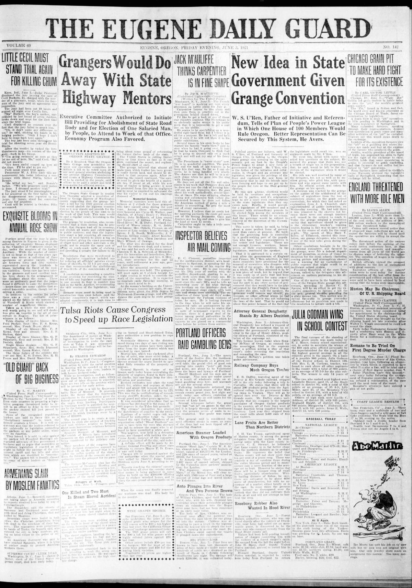
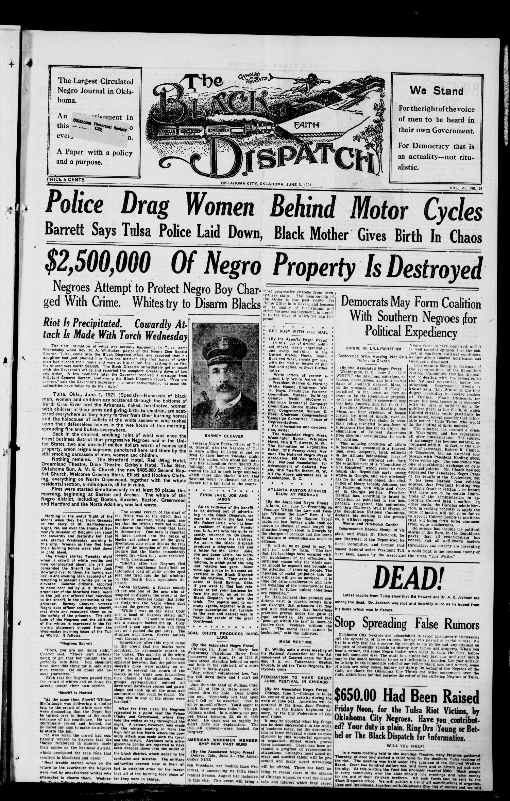

HN HN-426 · June 2, 1921 · Civil Rights & Social Change > Racial, Ethnic & Religious Justice > Lynching and racial violence
Tulsa 1921 first coverage variously reported 56, 75, 80, and about 100 dead; some accounts blamed Black residents while describing destruction of Black neighborhoods.
Source: Indianapolis Times, p. 1 — original page; National Park Service historical account.
Report: A dispatch from Tulsa, Oklahoma, announced martial law and a grand-jury investigation after an alleged nearly 100 deaths and massive property damage. The newspaper used the contemporary 'race riot' terminology, describing authorities attempting to assign blame.
Assessment: This was the Tulsa Race Massacre: white attackers destroyed much of Greenwood, an affluent Black district, and killed Black residents. Casualty estimates remain contested and no first-day figure is definitive. The NPS recounts both the early low official count and later higher estimates, and the underlying attack must not be presented as two equally situated mobs.
Identity-review candidate peers: HN-427:Algorithmic
Class: Printed differences (V)
Recorded difference/concern: Tulsa 1921 first coverage variously reported 56, 75, 80, and about 100 dead; some accounts blamed Black residents while describing destruction of Black neighborhoods.
Assessment: 56/75/100 are LOC guide's specific headlines (B); County Record's 'Eighty Killed' is A. Severe sourcing/perspective discrepancy; do NOT treat as reliable final toll.
Source links: https://www.loc.gov/resource/sn85042345/1921-06-02/ed-1/?sp=1 https://www.loc.gov/resource/sn82014248/1921-06-02/ed-1/?sp=1&st=text https://gateway.okhistory.org/ark:/67531/metadc152335/m1/1/
Authentic scans retrieved from Library of Congress / Chronicling America, Historic Oregon Newspapers (University of Oregon), South Carolina Historic Newspapers (University of South Carolina) and Gateway to Oklahoma History (Oklahoma Historical Society). Article crops are located using the archive's own OCR word coordinates and rendered at native crop resolution; page scans are reduced-size access renditions. No images were generated, mocked, or retouched.









Not yet acquired. Queued for provider-specific acquisition testing (see source-acquisition manifest).
URL (preserved verbatim): https://newspapers.library.in.gov/?a=d&d=IPT19210602.1.1
Saved research report: Historical_Newspaper_Event_Research_403-427_2026-10-23.md
Evidence note: A newspaper report means a historical publication made a claim; it does not establish that claim as fact. Contemporary reporting is separated from later scholarly context and our own assessment.